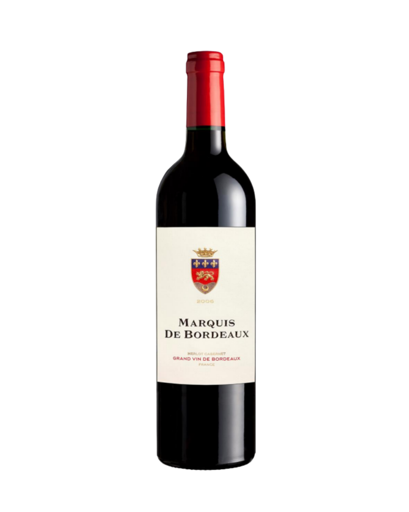
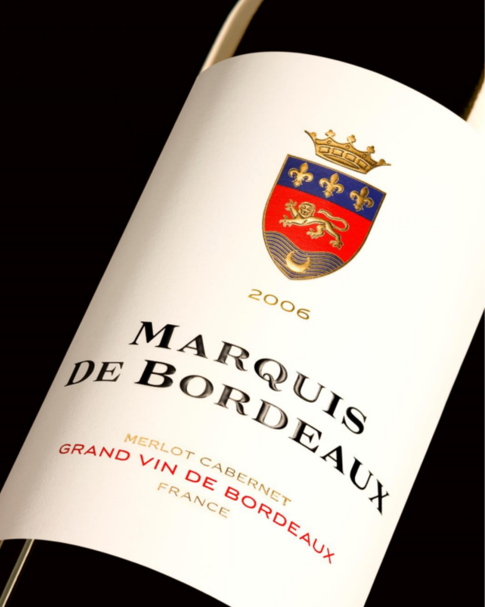

Bordeaux · Merlot 85% · Cabernet Sauvignon 15% · 14% alc./vol.


"After many years abroad, I was keen to associate the New World techniques that I had learnt with the classic terroir of my Bordeaux homeland. The result is a wine which fulfils my original objective: to show that Bordeaux can also offer top value wines in a fruity yet elegant style."
Limestone and clay of Entre-deux-mers, Sauvetterre-de-Guyenne area. The name Entre-Deux-Mers comes from "marée", the French word for tide — the region is "between two tides."
Alcohol: 14% | Tangential filtration | No clarification